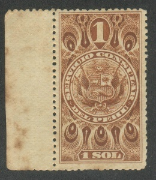
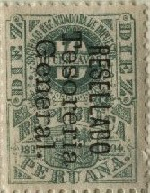
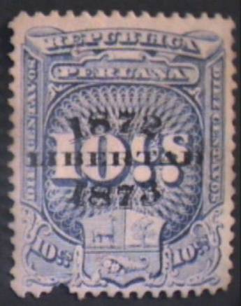
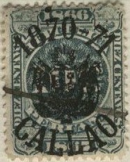

Note: on my website many of the
pictures can not be seen! They are of course present in the
catalogue;
contact me if you want to purchase the catalogue.

Stamps in the above design were issued in 1892 (10 c red, 50 c red, 1 S lilac, 2 S yellow, 5 S green, 10 S blue and 20 S red) and 1900 (10 c orange, 50 c brown, 1 S brown, 2 S brown, 5 S blue and 10 S orange).
With year '1866-1867' in design:
10 c green 25 c blue 1 S brown 5 S red 25 S red and yellow 50 S green and orange With year '1868-1869'
10 c violet 25 c green 1 S orange 5 S blue 25 S blue and violet 50 S violet and green With year '1876-1877'
10 c grey 25 c yellow 1 S orange 5 S green 10 S lilac 20 S brown 50 S grey 100 S grey 500 S blue 1000 S ? With year '1878-1879'
10 c yellow 25 c grey 1 S lilac 5 S orange 10 S grey 20 S grey 50 S yellow 100 S lilac 500 S red 1000 S green With year '1880-1881'
10 c red 25 c brown 1 S red 5 S yellow 10 S grey 20 S orange 50 S green 100 S blue 500 S blue 1000 S red With year '1884-1885'
10 c brown 25 c lilac 1 S red 20 S orange With year '1885-1886' 10 c brown With year '1889-1890' 10 c blue 25 c green 1 S yellow 5 S red 10 S brown With year '1891-1892'
10 c red 25 c lilac 1 S blue 5 S green 10 S orange 20 S green 50 S red With year '1893-1894'
10 c green 10 c brown 25 c blue 1 S red 1 S green 5 S brown 10 S red 20 S violet 50 S green 100 S orange

With no year indicated (1895)
2 c grey With year '1895-1896'
2 c green 10 c red 25 c violet 1 S blue 5 S orange 10 S ? 50 S blue 100 S red With year '1896-1898'
2 c blue 10 c brown 25 c blue 1 S red 5 S red With year '1899-1900'
2 c green 10 c red 25 c red 1 S brown 5 S blue With year '1901-1902
2 c brown 10 c red 25 c blue 1 S green 5 S orange
These stamps exist with overprint 'HABILITADO 1903-1904'.
With year '1903-1904' 2 c blue 10 c gren 25 c orange 1 S brown 5 S red
These stamps exist with overprint 'HABILITADO 1905-1906'.
With year '1905-1906' 2 c green 10 c brown 25 c brown 1 S red 5 S blue With year '1907-1908' 2 c brown 10 c blue 25 c red 1 S green 5 S brown With year '1909-1910'
2 c red 10 c brown 25 c blue $1 brown $5 green With year '1911-1912' 2 c green 10 c violet 25 c orange $1 yellow $5 brown With year '1913-1914' 2 c blue 10 c brown (Other values might exist) With year '1915-1916' 2 c green 10 c green 25 c red (Other values might exist) With year '1917-1918' 2 c brown 10 c green 25 c black (Other values might exist) With year '1919-1920' 2 c violet 10 c grey 25 c brown
I have seen similar fiscal stamps from '1921-1922', '1923-1924', '1925-1926', '1927-1928', '1929-1930' and '1931-1932'.
The stamps of 1868 1869 exist overprinted with a province name (no year!): 'Cajamarca' , 'Lima', 'Tarapoca', 'Ica', 'Piura', 'Arequipa', 'Ayacucho', 'Callao' and 'Moquega'.
('1874 PIURA 1875')
Similar stamps exist overprinted with a province name and '1870-1871', '1872-1873', '1874-1875': 'Amazonas', 'Ancachs', 'Arequipa', 'Ayacucho', 'Cajamarca', 'Callao', 'Cuzco', 'Huancavelica', 'Huanuco', 'Junin', 'Libertad', 'Lima', 'Loreto', 'Moquegua', 'Piura', 'Puno', 'Tarapaca' and 'Yca'.

('1872 LIBERTAD 1873' on 10 c)
(Arms of Chili and 'CAJA FISCAL DE LIMA')
The fiscal stamps of 1880-1881 exist with blue overprint 'CAJA FISCAL DE LIMA' and the arms of Chili (issued 1882 in the values 10 c, 25 c, 1 S, 5 S, 10 S and 20 S).
Other local overprints also exist:

I've seen a similar '1870-71 LIMA' overprint (on the same basic stamp).
(A more recent fiscal stamp)
The first tobacco fiscal stamps were issued in 1887, the last ones were issued in 1896.
Some local fiscal stamps exist, some examples of Arequipa:
{kind=link}